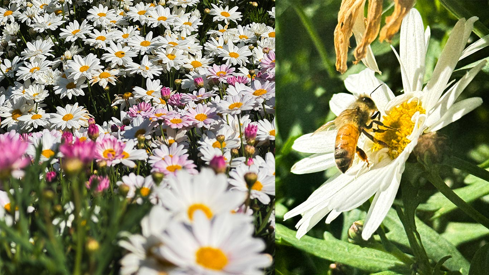
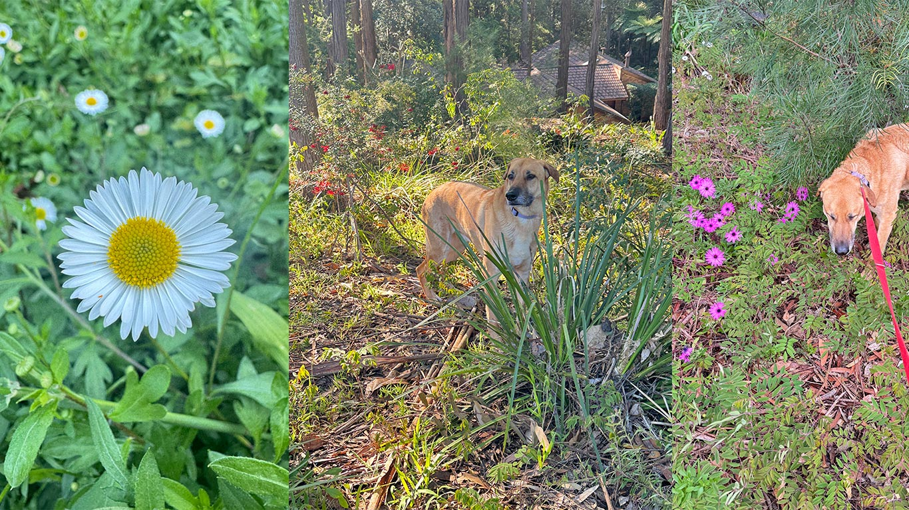
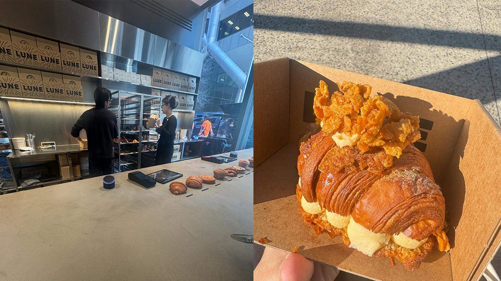
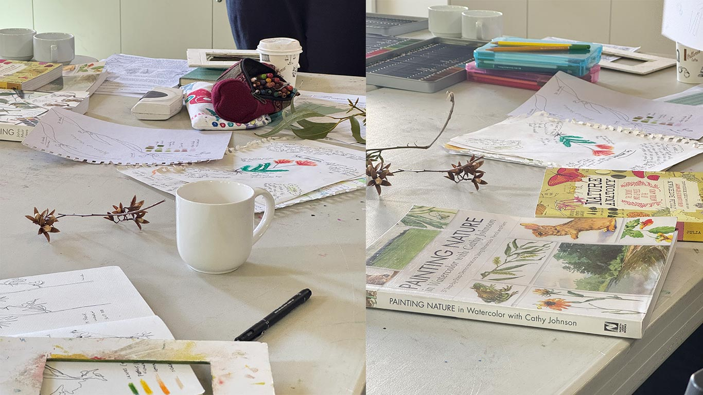
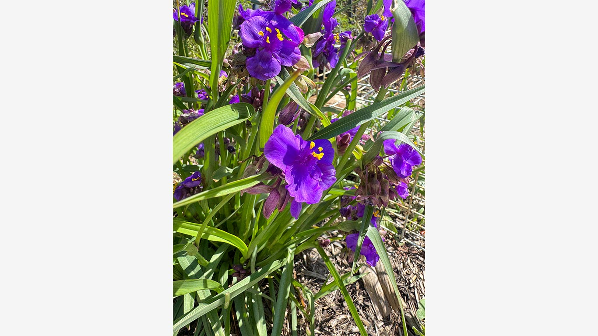
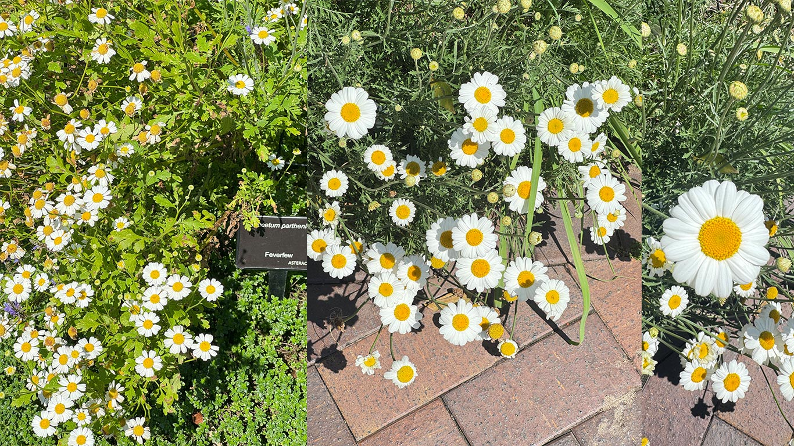
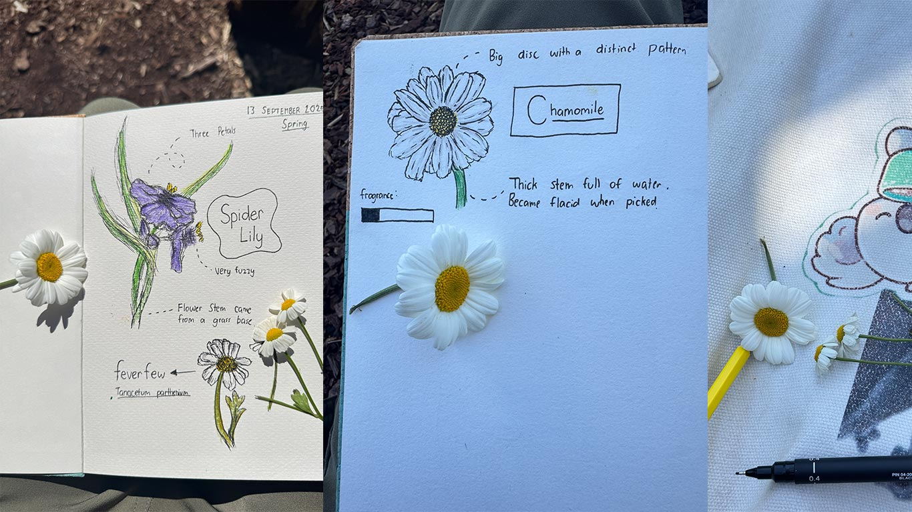

Happy Spring!



Each spring-time (and sometimes even the Autumn-season), I find myself always strolling through gardens and parks around Sydney. My go-to is always the Royal Botanic Garden as it is the most convenient, and it has some nice harbor views.
I admit: I don’t like Spring. I only say this not because of the flora. The flora’s the most beautiful during this season. It’s the fauna. I still don’t understand it, but you just get swarmed by flies every time you go outside. Moreover, Magpies get overly aggressive in defending their nest and they would swoop down at you for passing-by their territory.
But the flora never disappoints. In the first week of Spring, I ventured into the Botanic Gardens in Sydney. I bought some croissants in Lune Croissanterie (who markets themselves as the “best croissants in the world.” - I might have to agree with that.) A sat-down at the rose garden on one of the benches to eat the croissants. I bought a $7 plain croissant, and a more expensive $15 crispy honey croissant with the filling I can’t quite identify. I didn’t like the honey special one, but the plain croissant didn’t disappoint. The taste is like any other croissant, but there’s something about the texture of it that just makes sense.
Anyway, it’s fairly early in spring. There were no roses that’s currently blooming in the garden. I ventured off to nearby flowerbeds and it’s mostly just daisies that are currently blooming: common daisies, marguerites, paper daisies, daisy fleabanes.
There’s this one bush of marguerite daisies that had a really fragrant odor. It was so strong I didn’t have to come close to smell it and it was inducing an allergic reaction to my nose. Nevertheless, it made for a really great picture.
This season also marks the season in-which I was born (I’m counting as so since I was born in the Northern Hemisphere - it’s April in my heart dammit!)
I always love my birthdate. For one- April 5 has a nice ring to it. It’s culturally known to coincide with the Spring Season which breathes new life. My birth flower is primarily daisies which I owe to my joy and innocence.
Not only that, but somehow some of my favorite artists are born at around this date. Here are some which I can recall:
- Pedro Pascal (April 2)
- Robert Downey Jr. (April 4)
- Daniel Caesar (April 5)
- Oscar Piastri (April 6)
- Matty Healy (April 8)
I’m sure there are more, but those are what I can recall in my head. My mom’s birthdate is also just 3-days after me. Anyways, April & Spring are sort of really special for me and that’s why I would usually celebrate this season properly.
I used to draw a lot as a kid. Moreover, I really enjoyed my art classes during my elementary years. I remember loving the vibrant colors of oil pastels and how easy it was to mix certain colors. I enjoyed exploring the different colors of faber-castell pencils. I also explored my creativity in sketching with the different types of graphite pencils (HB, 2B, or whatever.)
In 5th Grade, I used to draw a lot of Pokemon characters on huge A4 sketch pads. I even had a classmate who was willing to give me money just to give him my drawings (probably my first art commissions lol.) Drawing Pokemon characters also taught me how to shade properly. I also learned how to get the proportions right by setting shapes first on a grid and slowly adding various details as I continue to draw.
I never had any formal lessons to draw as a kid honestly - it was just some hobby I did because I had nothing else to do as an only-child. Anyway, I didn’t always draw, but I feel when there are opportunities to do so, I would. When I first bought an iPad Pro with an Apple Pencil, I bought Procreate right away and drew some manga panels. The first one is a drawing of Armin’s Colossal Titan from Attack on Titan - this was a really great experience because it sort of taught me some stuff about human anatomy. Anyway, I didn’t continually draw on it because of college and constant anxiety about my future.
Zoology, Botany, and Microbiology. Sometimes I did try to draw seriously, but most of the time I would cram and be in a hurry and just make a drawing.
I’m recalling these experiences because I have an urge to rediscover the joy I had in sketching, coloring, and even nature. Quite honestly, I never understood journalling quite well. I know it’s a way for me to connect myself into life or have it as some sort of snapshot of what I’m feeling at a particular point of time. But I don’t know, I guess I’m just not the type to romanticise my life that much.
But there is one type of journaling which i’ve been highly interested of recently: nature journaling.

I signed-up for this short Nature Journaling class in the Botanic Gardens of Sydney yesterday. I went there (I was the only male and young person lol) and I met Hannah who was teaching us.
Nature journalling is sort of like traditional journaling, but it serves as a way to connect ourselves with nature. I guess living in Castle Hill where the neighbourhoods sometimes feel like a literal garden, I started having this urge to just draw & live in it.
Hannah was sort of a professional in nature journaling. Her sketches are amazing and she really knows her way around watercolouring, sketching nature in proportions, and finding ways to translate nature into sketches. She provided us with three cool resources about sketching nature - the most fascinated was when sketching animals, you can condense them into simple shapes to set the proportions before adding more detail giving you a realistic animals. This sort of reminded me when I was drawing Pokemon 15 years ago.

I was provided with a watercolour journal book for us to try out. We went to this small part of the botanic garden where we made some initial sketches. I drew this interesting violet flower called the Virginia Spider Lily.
Journaling is a personal thing - there is no right way of doing it. Some people are scientific with it. Some just describes what they see. And some romanticises it and correlate what they draw with what they are feeling right now. I think I lie somewhere in between the first two.
Anyway, I drew the Spider Lily in the usually method I know: rough & messy with some attempts to add detail or colour in some detail.
I finished the drawing and tried to add-in some observations I had. I also drew a little demon because the spider lily flower is a plot-point in the Demon Slayer anime.
I then ventured to another part of the garden. Of course, in the nature of spring and my birth flower, I just had to also find “it.”

I picked-up two flowers: a feverfew and a chamomile that was just located two blocks from the initial place where the spider lily is. I drew them as much as I can, noted my observations and even their fragrances. I kept the two flowers in my journal as a remembrance (I didn’t pick the spider lily unfortunately and I think it’s too big for the journal.)
Anyway, the session ended and chatted with a bit with Hannah. I told her about my biology background and how I wanted to unwind and reconnect with nature: to know why I loved studying biology in the first place. There’s a second session next month, but I’m unsure about paying $100 again for it.
Right now, I feel like buying a watercoloring pencil set, and a water marker to explore things here in Castle Hill.
The experience was very peaceful. There’s something about sitting on a patch of dirt or grass and just - drawing. Drawing while the sun is out surrounded by all sorts of flowers in the garden. There's also something about listening to DAISIES by Justin Bieber while doing this that just HITS.

This recounts my first few weeks of the Spring season. Really hoping for more fruitful things to come. :)